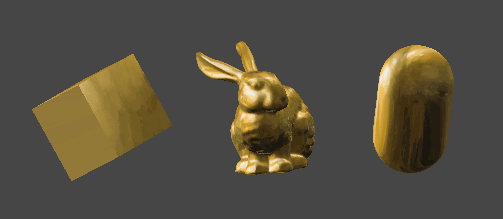

A MatCap shader (short for "Material Capture" shader) is a type of shading technique often used in 3D graphics to apply a predefined material or surface appearance to a 3D object. This technique is popular because it allows artists to quickly give objects a complex, polished look without needing advanced lighting calculations.
Here is an example of MatCap shader in Unity (ShaderGraph)


The shader itself is relatively simple. The bitmap is mapped onto the mesh based on the camera's view direction and the object's surface normals. This effect works notably well with unlit shaders:
Here is an example of MatCap shader in Unity (ShaderGraph)
The shader itself is relatively simple. The bitmap is mapped onto the mesh based on the camera's view direction and the object's surface normals. This effect works notably well with unlit shaders:
This shader works well on shiny materials such as: metals, liquids, glass, gems, car-pain finish etc.

Notice how this shader works much better on more detailed mesh. As you can see the bunny has a good representation of a golden material, whereas the cube is not shaded as well (even though they share the same material! ).
This shader allows for a great artistic control, as you can see the detail of the bitmap is preserved well! However, the MatCap shader utilises a variation of "baked lighting"" and does not represent real time shading by default!
Naturally MatCap shaders works extremely well to depics translusent objects such as: ice, glass, bubbles etc.


Here is an implementation of MatCap shader with alpha trasparency channel! Make sure that your SurfaceType is set to Transparent. This effect has a lot of potential, and it is computationaly light-weight.
Notice how this shader works much better on more detailed mesh. As you can see the bunny has a good representation of a golden material, whereas the cube is not shaded as well (even though they share the same material! ).
This shader allows for a great artistic control, as you can see the detail of the bitmap is preserved well! However, the MatCap shader utilises a variation of "baked lighting"" and does not represent real time shading by default!
Naturally MatCap shaders works extremely well to depics translusent objects such as: ice, glass, bubbles etc.
Here is an implementation of MatCap shader with alpha trasparency channel! Make sure that your SurfaceType is set to Transparent. This effect has a lot of potential, and it is computationaly light-weight.
Here are few more examples, feel free to download the bitmaps and use it in your projects!
[ Images are 2048x2048 ]
[ Images are 2048x2048 ]


Notable example, this effect can be seen in Super Mario Odyssey - Gold Mario ( it appears to use a similar shading technique ), this shader is sometimes used as a default material in 3D modelling software.

▼ Download all files! [ 2 shaders & 6 bitmaps ]